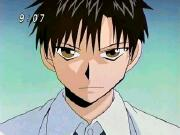

|  |
Kiyomaru is the 14-year old genius who is not motivated to go to school because he is too smart for his junior high class.
Kiyomaru's archaeologist father, who is doing research in England, sends a small demon that he found named Gash Bell to try to motivate Kiyomaru to go to school and make friends.
Little does he know that Gash is embroiled into an intense fight to see who is the ruler of the demon world. Needless to say, Kiyomaro becomes Gash's master, and through their many battles, Kiyomaro learns the importance of friendship and courage.
|